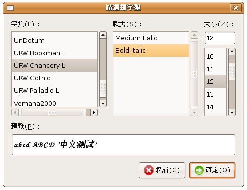
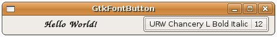

GtkFontButton
是一個外觀為目前選擇字型名稱的按鈕，按下時會出現選取字型的對話方塊，您可以使用gtk_font_button_new()建立按鈕，或是使用
gtk_color_button_new_with_font()指定初始字型建立按鈕，指定時使用字串指定，格式為"Family Style
Size"。Family為字型名稱，例如"Arial"、"Serif"這樣的名稱。Style為字型樣式，可設定的樣式依字型而有所不同，通常可以指
定的有粗體"Bold"、斜體"Italic"、粗斜體"Bold Italic"。Size是字型的大小。
使用gtk_font_button_set_font_name()或gtk_font_button_get_font_name()設定或取得目前
的字型名稱，如果您打算使用指定的字型來改變元件的字型外觀，則可以使用gtk_widget_modify_font()，這會需要一個
PangoFontDescription的字型描述結構，要取得指定字型的PangoFontDescription，可以使用pango_font_description_from_string()並指定字型名稱，例如：
const gchar *font = gtk_font_button_get_font_name (button);
PangoFontDescription *fontDesc = pango_font_description_from_string (font);
gtk_widget_modify_font(label, fontDesc);
下面這個範例，可以讓您按下按鈕進行字型選取，並依選擇的字型改變文字的字型外觀：
#include <gtk/gtk.h>
void font_changed(GtkFontButton *button, gpointer label) {
const gchar *fontName = gtk_font_button_get_font_name(button);
PangoFontDescription *fontDesc =
pango_font_description_from_string(fontName);
gtk_widget_modify_font(GTK_WIDGET(label), fontDesc);
}
int main(int argc, char *argv[]) {
GtkWidget *window;
GtkWidget *label;
GtkWidget *button;
GtkWidget *box;
PangoFontDescription *fontDesc;
gtk_init(&argc, &argv);
window = gtk_window_new(GTK_WINDOW_TOPLEVEL);
gtk_window_set_title(GTK_WINDOW(window), "GtkFontButton");
label = gtk_label_new("Hello World!");
fontDesc = pango_font_description_from_string("Courier Pitch Bold 12");
gtk_widget_modify_font(label, fontDesc);
button = gtk_font_button_new_with_font("Courier Pitch Bold 12");
box = gtk_hbox_new(TRUE, 5);
gtk_box_pack_start(GTK_BOX(box), label, TRUE, TRUE, 5);
gtk_box_pack_start(GTK_BOX(box), button, TRUE, TRUE, 5);
gtk_container_add(GTK_CONTAINER(window), box);
g_signal_connect(GTK_OBJECT(window), "destroy",
G_CALLBACK(gtk_main_quit), NULL);
g_signal_connect(GTK_OBJECT(button), "font_set",
G_CALLBACK(font_changed), label);
gtk_widget_show_all(window);
gtk_main();
return 0;
}
執行時的外觀如下：
按下按鈕後的對話方塊外觀如下所示：

改變字型後的畫面如下所示：

按下按鈕後出現的對話方塊，實際上是GtkFontSelectionDialog，您也可以自行使用GtkFontDialogDialog來完成上面的範例：
#include <gtk/gtk.h>
void font_changed(GtkButton *button, gpointer label) {
PangoFontDescription *fontDesc;
GtkWidget *dialog = gtk_font_selection_dialog_new("Choose a Font");
const gchar *fontName = gtk_button_get_label(button);
gtk_font_selection_dialog_set_font_name(
GTK_FONT_SELECTION_DIALOG(dialog), fontName);
gtk_dialog_run(GTK_DIALOG(dialog));
fontName = gtk_font_selection_dialog_get_font_name(
GTK_FONT_SELECTION_DIALOG(dialog));
gtk_button_set_label(button, fontName);
fontDesc = pango_font_description_from_string(fontName);
gtk_widget_modify_font(GTK_WIDGET(label), fontDesc);
gtk_widget_destroy(dialog);
}
int main(int argc, char *argv[]) {
GtkWidget *window;
GtkWidget *label;
GtkWidget *button;
GtkWidget *box;
PangoFontDescription *fontDesc;
gtk_init(&argc, &argv);
window = gtk_window_new(GTK_WINDOW_TOPLEVEL);
gtk_window_set_title(GTK_WINDOW(window), "GtkFontSelectionDialog");
label = gtk_label_new("Hello World!");
fontDesc = pango_font_description_from_string("Courier Pitch Bold 12");
gtk_widget_modify_font(label, fontDesc);
button = gtk_button_new_with_label("Courier Pitch Bold 12");
box = gtk_hbox_new(TRUE, 5);
gtk_box_pack_start(GTK_BOX(box), label, TRUE, TRUE, 5);
gtk_box_pack_start(GTK_BOX(box), button, TRUE, TRUE, 5);
gtk_container_add(GTK_CONTAINER(window), box);
g_signal_connect(GTK_OBJECT(window), "destroy",
G_CALLBACK(gtk_main_quit), NULL);
g_signal_connect(GTK_OBJECT(button), "clicked",
G_CALLBACK(font_changed), label);
gtk_widget_show_all(window);
gtk_main();
return 0;
}
|
|